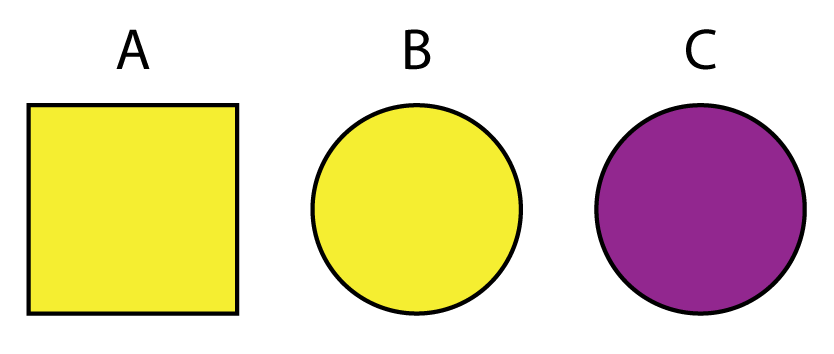
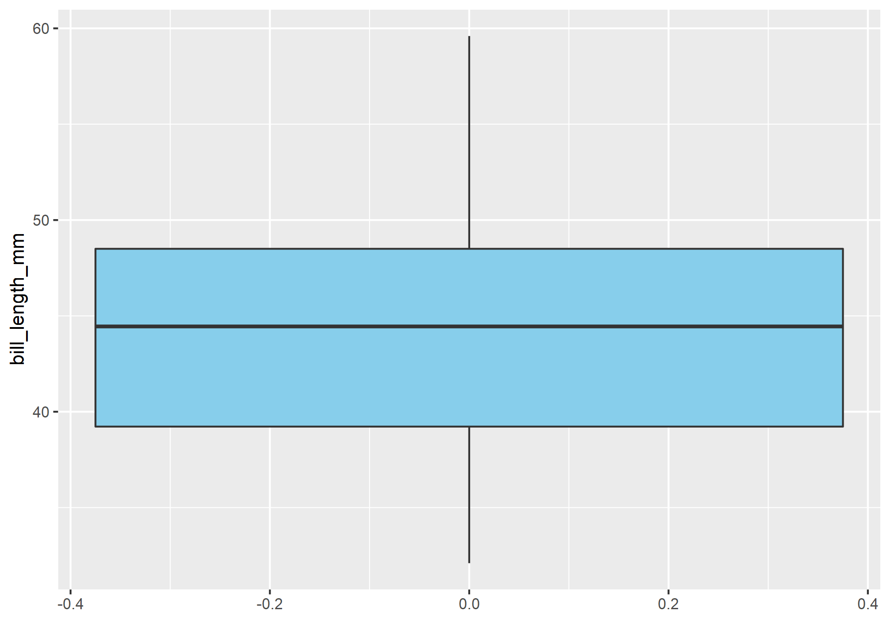
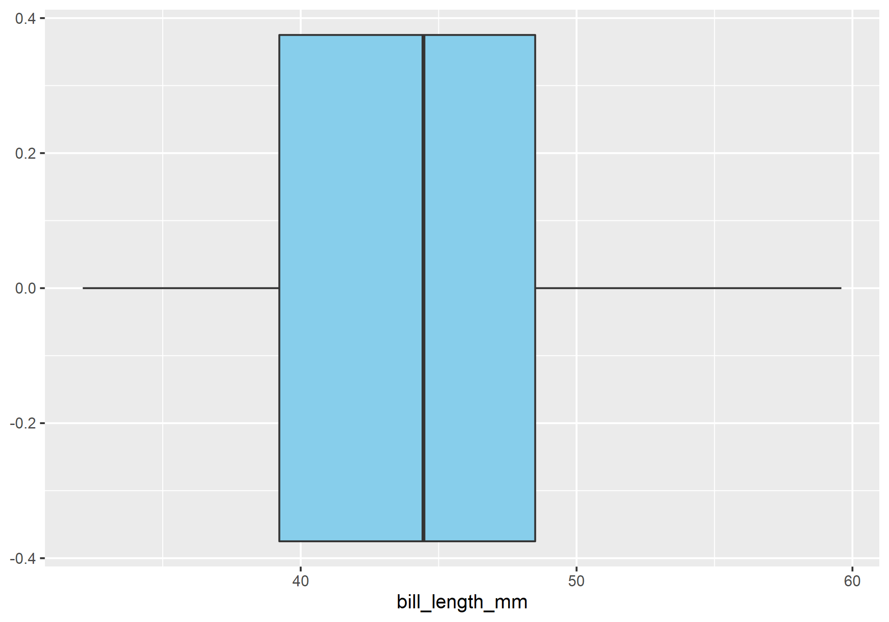
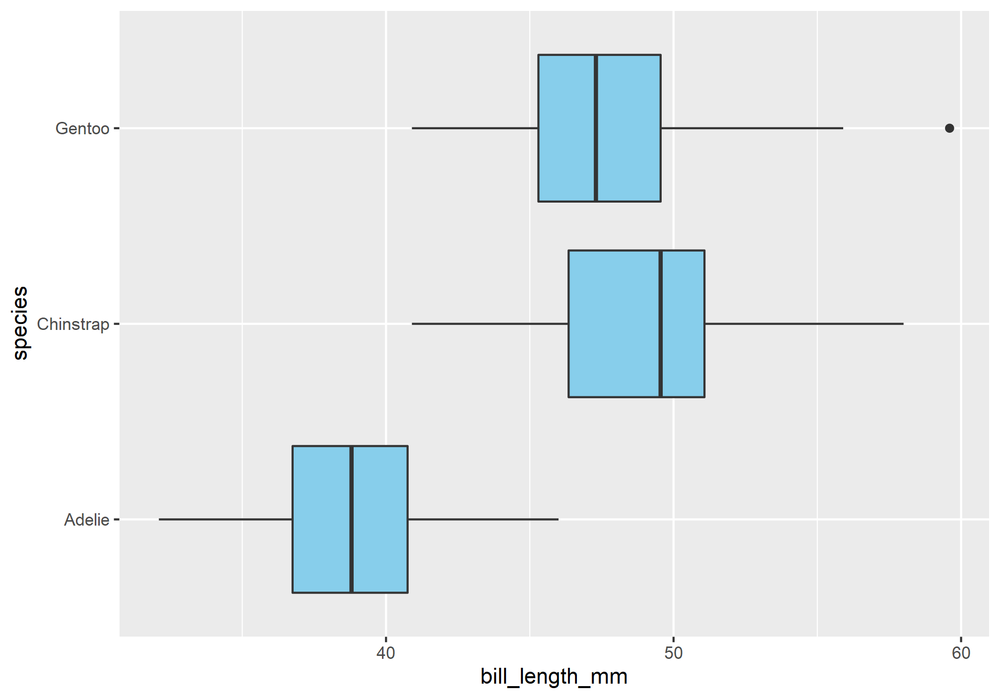
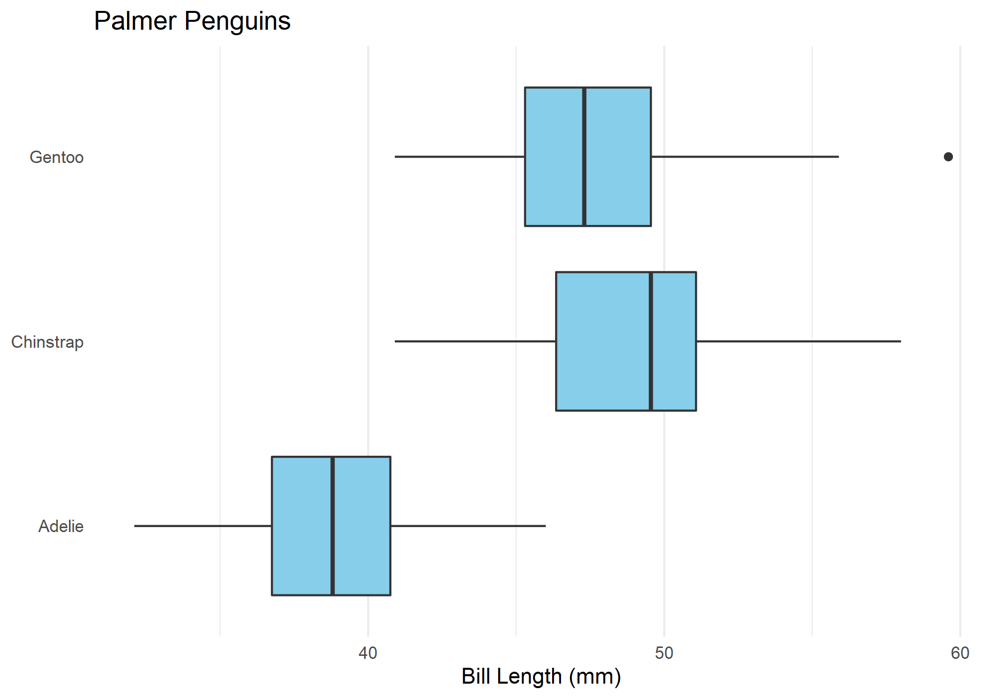
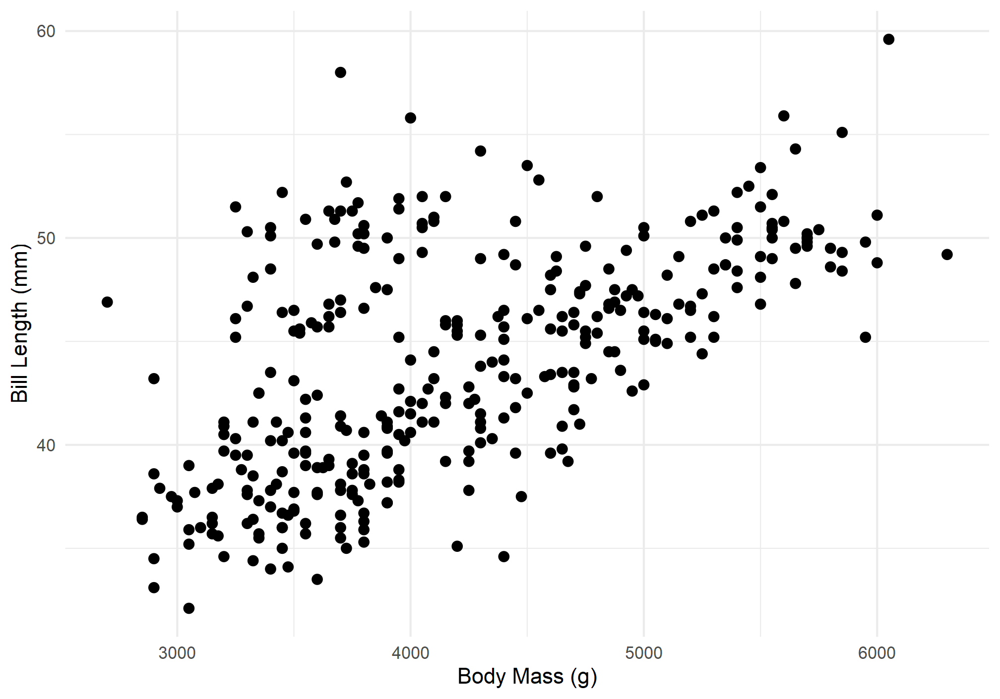

Lab 05
Diagnostic Tests and Diagnostic Plots
Outline
TL;DR wrangling data tables, visualizing distributions with boxplots, linear models, diagnostic tests, and diagnostic plots.
Caution! Please note that all labs assume that you are working in an RStudio Project directory!
Objectives
This lab will guide you through the process of
- working with data tables using
dplyr- extracting variables with
pull() - choosing variables with
select() - subsetting observations with
filter() - sorting observations with
arrange() - making pretty tables with
tibble()
- extracting variables with
- visualizing distributions with boxplots
- evaluating a linear model with the ANOVA
- interpreting model summaries in R
R Packages
We will be using the following packages:
To install these packages, run the following code in your console:
install.packages(
c("archdata", "dplyr", "ggplot2", "palmerpenguins", "tibble")
)Note: You should not install.packages() in an Rmd document. Use that function in your R console instead. Then use library() as part of the preamble in your Rmd document to check packages out of the library and use them in that R session. This should always go at the start of your document!
library(archdata)
library(dplyr)
library(ggplot2)
library(palmerpenguins)
library(tibble)Data
DartPoints- Includes measurements of 91 Archaic dart points recovered during surface surveys at Fort Hood, Texas.
- package:
archdata - reference: https://cran.r-project.org/web/packages/archdata/archdata.pdf
OxfordPots- Includes percentages of late Romano-British Oxford Pottery on 30 sites, along with their distance from Oxford.
- reference: https://cran.r-project.org/web/packages/archdata/archdata.pdf
penguins- Includes measurements for penguin species, island in Palmer Archipelago, size (flipper length, body mass, bill dimensions), and sex.
- package:
palmerpenguins - reference: https://allisonhorst.github.io/palmerpenguins/reference/penguins.html
Tidy Tables Review

Elements of a Data Table
In the following sections, we are going to learn how to work with the dplyr package, so called because it provides tools like “pliers” for working with tabular data. This is easily one of the most useful packages in the entire R ecosystem. The ability to quickly and cleanly manipulate data to prepare it for analysis is just unmatched by anything else out there. The syntax that dplyr uses for its functions is also infinitely easier to read and understand. Before we jump into that, however, let’s remind ourselves of the three conventions for tidy data:
- Each variable must have its own column.
- Each observation must have its own row.
- Each value must have its own cell.
Here we are going to focus on the functionality dplyr offers to select() variables and filter() observations. As a warm up, though, we’ll first have a look at how to extract a single variable as a vector from a table with pull(). We’ll then talk about a few quirks of the package, like its use of tibbles rather than base data.frames.
Select Variables
Extract variables
The base R way of extracting a single variable is to use <table>[["<variable>"]] or <table>$<variable>.
bill_length <- penguins$bill_length_mm
bill_depth <- penguins[["bill_depth_mm"]]The dplyr way to do this, which is somewhat easier to understand is to use pull(), as in pull the variable from the table.
bill_length <- pull(penguins, bill_length_mm)
bill_depth <- pull(penguins, bill_depth_mm)Select variables
Note that pull() returns a single variable (called a “vector” in R) along with all its values. If you want to select one or more variables but return the result as a table, use select(). For instance, here are the variables in the penguins dataset.
names(penguins)
## [1] "species" "island" "bill_length_mm"
## [4] "bill_depth_mm" "flipper_length_mm" "body_mass_g"
## [7] "sex" "year"Now suppose (for reasons) that I want a smaller table that only has the species and bill_length_mm variables. To get that from the larger table, I simply do this
penguins_small <- select(penguins, species, bill_length_mm)
penguins_small
## # A tibble: 344 x 2
## species bill_length_mm
## <fct> <dbl>
## 1 Adelie 39.1
## 2 Adelie 39.5
## 3 Adelie 40.3
## 4 Adelie NA
## 5 Adelie 36.7
## 6 Adelie 39.3
## 7 Adelie 38.9
## 8 Adelie 39.2
## 9 Adelie 34.1
## 10 Adelie 42
## # ... with 334 more rowsExercises
- Remind yourself of what variables the penguins table has with
names(). - Now, extract a variable of your choice with
pull(). - Subset the data by choosing only four variables of your choice with
select().
Filter Observations
Subsetting data by filtering observations is a little bit more involved than simply selecting variables, but intuitively, you are simply asking for those observations that satisfy a certain condition. Getting filter() to return those observations requires that you pass it an expression containing a comparison operator. The expression is then evaluated by R for its truth or falsity, with observations that evaluate to TRUE being returned, observations that evaluate to FALSE being ignored. Let’s walk through an example, then try to break down what is happening in a little more detail. Suppose we want only those observations of penguins residing on Biscoe Island. Here is how we would go about collecting those observations from our penguins data.frame.
biscoe_penguins <- filter(penguins, island == "Biscoe")
head(biscoe_penguins)
## # A tibble: 6 x 8
## species island bill_length_mm bill_depth_mm flipper_length_~ body_mass_g sex
## <fct> <fct> <dbl> <dbl> <int> <int> <fct>
## 1 Adelie Biscoe 37.8 18.3 174 3400 fema~
## 2 Adelie Biscoe 37.7 18.7 180 3600 male
## 3 Adelie Biscoe 35.9 19.2 189 3800 fema~
## 4 Adelie Biscoe 38.2 18.1 185 3950 male
## 5 Adelie Biscoe 38.8 17.2 180 3800 male
## 6 Adelie Biscoe 35.3 18.9 187 3800 fema~
## # ... with 1 more variable: year <int>Here we supplied this key information to filter():
island == "Biscoe"What does this expression mean exactly? In effect, it is directing filter() to scan through our data, specifically the island column, and select only those rows where the value is Biscoe. The so-called comparison operator here is the double equal sign, ==. This is importantly different than the single equal sign, =, which is used inside a function as part of a key=value or argument=value pair. R provides several helpful comparison operators:
==for equals in the sense of a perfect match,
!=for not equals,
>for greater than,
>=for greater than or equal to,
<for less than, and
<=for less than or equal to.
You can use the first two, == and !=, for comparisons with either character or numeric variables, but the rest apply only to the latter. Let’s run through a few more examples:
Filter penguins with body mass greater than 3500 grams.
larger_penguins <- filter(penguins, body_mass_g > 3500)
head(larger_penguins)
## # A tibble: 6 x 8
## species island bill_length_mm bill_depth_mm flipper_length_~ body_mass_g sex
## <fct> <fct> <dbl> <dbl> <int> <int> <fct>
## 1 Adelie Torge~ 39.1 18.7 181 3750 male
## 2 Adelie Torge~ 39.5 17.4 186 3800 fema~
## 3 Adelie Torge~ 39.3 20.6 190 3650 male
## 4 Adelie Torge~ 38.9 17.8 181 3625 fema~
## 5 Adelie Torge~ 39.2 19.6 195 4675 male
## 6 Adelie Torge~ 42 20.2 190 4250 <NA>
## # ... with 1 more variable: year <int>Filter penguins with beaks longer than 39 millimeters.
longer_beaks <- filter(penguins, bill_length_mm > 39)
head(longer_beaks)
## # A tibble: 6 x 8
## species island bill_length_mm bill_depth_mm flipper_length_~ body_mass_g sex
## <fct> <fct> <dbl> <dbl> <int> <int> <fct>
## 1 Adelie Torge~ 39.1 18.7 181 3750 male
## 2 Adelie Torge~ 39.5 17.4 186 3800 fema~
## 3 Adelie Torge~ 40.3 18 195 3250 fema~
## 4 Adelie Torge~ 39.3 20.6 190 3650 male
## 5 Adelie Torge~ 39.2 19.6 195 4675 male
## 6 Adelie Torge~ 42 20.2 190 4250 <NA>
## # ... with 1 more variable: year <int>Multiple conditions
Often enough, we will want to combine a number of these simple conditions into one complex expression. In R, this is done with Boolean operators:
&for and,
|for or, and
!for not.
To demonstrate the underlying logic of these Boolean operators, consider these shapes and colors. You can think of each of A, B, and C as its own observation or row in a data.frame that includes two variables color and shape.

| Boolean | Filter | Result |
|---|---|---|
| x |
color == "yellow"
|
A, B |
| y |
shape == "circle"
|
B, C |
| x & y |
color == "yellow" & shape == "circle"
|
B |
| x | y |
color == "yellow" | shape == "circle"
|
A, B, C |
| x & !y |
color == "yellow" & shape != "circle"
|
A |
| !x & y |
color != "yellow" & shape == "circle"
|
C |
| !(x & y) |
!(color == "yellow" & shape == "circle")
|
A, C |
| !(x | y) |
!(color == "yellow" | shape == "circle")
|
NULL |
And here is an example with our penguins data.frame, where we ask R to return those observations in which (a) penguins reside on Biscoe Island and (b) their bills are longer than 39 millimeters.
biscoe_long_beaks <- filter(penguins, island == "Biscoe" & bill_length_mm > 39)
head(biscoe_long_beaks)
## # A tibble: 6 x 8
## species island bill_length_mm bill_depth_mm flipper_length_~ body_mass_g sex
## <fct> <fct> <dbl> <dbl> <int> <int> <fct>
## 1 Adelie Biscoe 40.6 18.6 183 3550 male
## 2 Adelie Biscoe 40.5 17.9 187 3200 fema~
## 3 Adelie Biscoe 40.5 18.9 180 3950 male
## 4 Adelie Biscoe 39.6 17.7 186 3500 fema~
## 5 Adelie Biscoe 40.1 18.9 188 4300 male
## 6 Adelie Biscoe 42 19.5 200 4050 male
## # ... with 1 more variable: year <int>Note that filter() let’s you separate conditions with a comma, which it interprets as conjunction, represented by the &.
filter(
penguins,
island == "Biscoe",
species == "Adelie",
body_mass_g < 3500
)
## # A tibble: 13 x 8
## species island bill_length_mm bill_depth_mm flipper_length_mm body_mass_g
## <fct> <fct> <dbl> <dbl> <int> <int>
## 1 Adelie Biscoe 37.8 18.3 174 3400
## 2 Adelie Biscoe 40.5 17.9 187 3200
## 3 Adelie Biscoe 37.9 18.6 172 3150
## 4 Adelie Biscoe 35 17.9 190 3450
## 5 Adelie Biscoe 34.5 18.1 187 2900
## 6 Adelie Biscoe 36.5 16.6 181 2850
## 7 Adelie Biscoe 35.7 16.9 185 3150
## 8 Adelie Biscoe 36.4 17.1 184 2850
## 9 Adelie Biscoe 35.5 16.2 195 3350
## 10 Adelie Biscoe 37.7 16 183 3075
## 11 Adelie Biscoe 37.9 18.6 193 2925
## 12 Adelie Biscoe 38.1 17 181 3175
## 13 Adelie Biscoe 39.7 17.7 193 3200
## # ... with 2 more variables: sex <fct>, year <int>Exercises
- Try all of the following with
filter():- Filter penguins that reside on Torgersen island.
- Filter penguins that have a flipper length greater than 185 mm.
- Fitler penguins that reside on Torgersen island and have a body mass less than 3500 g.
- Try two more filters with multiple conditions of your choice.
Miscellaneous Dplyr
Sort observations
Sometimes it can be useful to sort a table, so you can more easily navigate the information it contains. To do this, dplyr provides the arrange() function. This sorts observations based on a supplied variable or variables. By default, it sorts observations in ascending order (from A to Z for character and 0 to Infinity for numeric). If you provide multiple variables, it will sort the first variable first, then sort the second variable within that variable, and so on. In effect, it breaks ties in the sorting process.
penguins
## # A tibble: 344 x 8
## species island bill_length_mm bill_depth_mm flipper_length_mm body_mass_g
## <fct> <fct> <dbl> <dbl> <int> <int>
## 1 Adelie Torgersen 39.1 18.7 181 3750
## 2 Adelie Torgersen 39.5 17.4 186 3800
## 3 Adelie Torgersen 40.3 18 195 3250
## 4 Adelie Torgersen NA NA NA NA
## 5 Adelie Torgersen 36.7 19.3 193 3450
## 6 Adelie Torgersen 39.3 20.6 190 3650
## 7 Adelie Torgersen 38.9 17.8 181 3625
## 8 Adelie Torgersen 39.2 19.6 195 4675
## 9 Adelie Torgersen 34.1 18.1 193 3475
## 10 Adelie Torgersen 42 20.2 190 4250
## # ... with 334 more rows, and 2 more variables: sex <fct>, year <int>
arrange(penguins, species, island)
## # A tibble: 344 x 8
## species island bill_length_mm bill_depth_mm flipper_length_mm body_mass_g
## <fct> <fct> <dbl> <dbl> <int> <int>
## 1 Adelie Biscoe 37.8 18.3 174 3400
## 2 Adelie Biscoe 37.7 18.7 180 3600
## 3 Adelie Biscoe 35.9 19.2 189 3800
## 4 Adelie Biscoe 38.2 18.1 185 3950
## 5 Adelie Biscoe 38.8 17.2 180 3800
## 6 Adelie Biscoe 35.3 18.9 187 3800
## 7 Adelie Biscoe 40.6 18.6 183 3550
## 8 Adelie Biscoe 40.5 17.9 187 3200
## 9 Adelie Biscoe 37.9 18.6 172 3150
## 10 Adelie Biscoe 40.5 18.9 180 3950
## # ... with 334 more rows, and 2 more variables: sex <fct>, year <int>You can use the desc() function to sort descending.
arrange(penguins, desc(species))
## # A tibble: 344 x 8
## species island bill_length_mm bill_depth_mm flipper_length_mm body_mass_g
## <fct> <fct> <dbl> <dbl> <int> <int>
## 1 Gentoo Biscoe 46.1 13.2 211 4500
## 2 Gentoo Biscoe 50 16.3 230 5700
## 3 Gentoo Biscoe 48.7 14.1 210 4450
## 4 Gentoo Biscoe 50 15.2 218 5700
## 5 Gentoo Biscoe 47.6 14.5 215 5400
## 6 Gentoo Biscoe 46.5 13.5 210 4550
## 7 Gentoo Biscoe 45.4 14.6 211 4800
## 8 Gentoo Biscoe 46.7 15.3 219 5200
## 9 Gentoo Biscoe 43.3 13.4 209 4400
## 10 Gentoo Biscoe 46.8 15.4 215 5150
## # ... with 334 more rows, and 2 more variables: sex <fct>, year <int>Pretty tibbles
You may not have noticed before, but the penguins data comes in the form of a tibble rather than a default data.frame. In the grand scheme of things, the differences between tibbles and data.frames are quite small. However, I want to draw your attention to them briefly to avoid any confusion, especially because dplyr will on occasion implicitly convert data.frames to tibbles. The main difference is that tibbles have nicer (some might say prettier) print methods.
Here’s the penguins data printed as a tibble.
penguins
## # A tibble: 344 x 8
## species island bill_length_mm bill_depth_mm flipper_length_mm body_mass_g
## <fct> <fct> <dbl> <dbl> <int> <int>
## 1 Adelie Torgersen 39.1 18.7 181 3750
## 2 Adelie Torgersen 39.5 17.4 186 3800
## 3 Adelie Torgersen 40.3 18 195 3250
## 4 Adelie Torgersen NA NA NA NA
## 5 Adelie Torgersen 36.7 19.3 193 3450
## 6 Adelie Torgersen 39.3 20.6 190 3650
## 7 Adelie Torgersen 38.9 17.8 181 3625
## 8 Adelie Torgersen 39.2 19.6 195 4675
## 9 Adelie Torgersen 34.1 18.1 193 3475
## 10 Adelie Torgersen 42 20.2 190 4250
## # ... with 334 more rows, and 2 more variables: sex <fct>, year <int>And here’s the penguins data printed as a data.frame (brace yourself).
as.data.frame(penguins)
## species island bill_length_mm bill_depth_mm flipper_length_mm
## 1 Adelie Torgersen 39.1 18.7 181
## 2 Adelie Torgersen 39.5 17.4 186
## 3 Adelie Torgersen 40.3 18.0 195
## 4 Adelie Torgersen NA NA NA
## 5 Adelie Torgersen 36.7 19.3 193
## 6 Adelie Torgersen 39.3 20.6 190
## 7 Adelie Torgersen 38.9 17.8 181
## 8 Adelie Torgersen 39.2 19.6 195
## 9 Adelie Torgersen 34.1 18.1 193
## 10 Adelie Torgersen 42.0 20.2 190
## 11 Adelie Torgersen 37.8 17.1 186
## 12 Adelie Torgersen 37.8 17.3 180
## 13 Adelie Torgersen 41.1 17.6 182
## 14 Adelie Torgersen 38.6 21.2 191
## 15 Adelie Torgersen 34.6 21.1 198
## 16 Adelie Torgersen 36.6 17.8 185
## 17 Adelie Torgersen 38.7 19.0 195
## 18 Adelie Torgersen 42.5 20.7 197
## 19 Adelie Torgersen 34.4 18.4 184
## 20 Adelie Torgersen 46.0 21.5 194
## 21 Adelie Biscoe 37.8 18.3 174
## 22 Adelie Biscoe 37.7 18.7 180
## 23 Adelie Biscoe 35.9 19.2 189
## 24 Adelie Biscoe 38.2 18.1 185
## 25 Adelie Biscoe 38.8 17.2 180
## 26 Adelie Biscoe 35.3 18.9 187
## 27 Adelie Biscoe 40.6 18.6 183
## 28 Adelie Biscoe 40.5 17.9 187
## 29 Adelie Biscoe 37.9 18.6 172
## 30 Adelie Biscoe 40.5 18.9 180
## 31 Adelie Dream 39.5 16.7 178
## 32 Adelie Dream 37.2 18.1 178
## 33 Adelie Dream 39.5 17.8 188
## 34 Adelie Dream 40.9 18.9 184
## 35 Adelie Dream 36.4 17.0 195
## 36 Adelie Dream 39.2 21.1 196
## 37 Adelie Dream 38.8 20.0 190
## 38 Adelie Dream 42.2 18.5 180
## 39 Adelie Dream 37.6 19.3 181
## 40 Adelie Dream 39.8 19.1 184
## 41 Adelie Dream 36.5 18.0 182
## 42 Adelie Dream 40.8 18.4 195
## 43 Adelie Dream 36.0 18.5 186
## 44 Adelie Dream 44.1 19.7 196
## 45 Adelie Dream 37.0 16.9 185
## 46 Adelie Dream 39.6 18.8 190
## 47 Adelie Dream 41.1 19.0 182
## 48 Adelie Dream 37.5 18.9 179
## 49 Adelie Dream 36.0 17.9 190
## 50 Adelie Dream 42.3 21.2 191
## 51 Adelie Biscoe 39.6 17.7 186
## 52 Adelie Biscoe 40.1 18.9 188
## 53 Adelie Biscoe 35.0 17.9 190
## 54 Adelie Biscoe 42.0 19.5 200
## 55 Adelie Biscoe 34.5 18.1 187
## 56 Adelie Biscoe 41.4 18.6 191
## 57 Adelie Biscoe 39.0 17.5 186
## 58 Adelie Biscoe 40.6 18.8 193
## 59 Adelie Biscoe 36.5 16.6 181
## 60 Adelie Biscoe 37.6 19.1 194
## 61 Adelie Biscoe 35.7 16.9 185
## 62 Adelie Biscoe 41.3 21.1 195
## 63 Adelie Biscoe 37.6 17.0 185
## 64 Adelie Biscoe 41.1 18.2 192
## 65 Adelie Biscoe 36.4 17.1 184
## 66 Adelie Biscoe 41.6 18.0 192
## 67 Adelie Biscoe 35.5 16.2 195
## 68 Adelie Biscoe 41.1 19.1 188
## 69 Adelie Torgersen 35.9 16.6 190
## 70 Adelie Torgersen 41.8 19.4 198
## 71 Adelie Torgersen 33.5 19.0 190
## 72 Adelie Torgersen 39.7 18.4 190
## 73 Adelie Torgersen 39.6 17.2 196
## 74 Adelie Torgersen 45.8 18.9 197
## 75 Adelie Torgersen 35.5 17.5 190
## 76 Adelie Torgersen 42.8 18.5 195
## 77 Adelie Torgersen 40.9 16.8 191
## 78 Adelie Torgersen 37.2 19.4 184
## 79 Adelie Torgersen 36.2 16.1 187
## 80 Adelie Torgersen 42.1 19.1 195
## 81 Adelie Torgersen 34.6 17.2 189
## 82 Adelie Torgersen 42.9 17.6 196
## 83 Adelie Torgersen 36.7 18.8 187
## 84 Adelie Torgersen 35.1 19.4 193
## 85 Adelie Dream 37.3 17.8 191
## 86 Adelie Dream 41.3 20.3 194
## 87 Adelie Dream 36.3 19.5 190
## 88 Adelie Dream 36.9 18.6 189
## 89 Adelie Dream 38.3 19.2 189
## 90 Adelie Dream 38.9 18.8 190
## 91 Adelie Dream 35.7 18.0 202
## 92 Adelie Dream 41.1 18.1 205
## 93 Adelie Dream 34.0 17.1 185
## 94 Adelie Dream 39.6 18.1 186
## 95 Adelie Dream 36.2 17.3 187
## 96 Adelie Dream 40.8 18.9 208
## 97 Adelie Dream 38.1 18.6 190
## 98 Adelie Dream 40.3 18.5 196
## 99 Adelie Dream 33.1 16.1 178
## 100 Adelie Dream 43.2 18.5 192
## 101 Adelie Biscoe 35.0 17.9 192
## 102 Adelie Biscoe 41.0 20.0 203
## 103 Adelie Biscoe 37.7 16.0 183
## 104 Adelie Biscoe 37.8 20.0 190
## 105 Adelie Biscoe 37.9 18.6 193
## 106 Adelie Biscoe 39.7 18.9 184
## 107 Adelie Biscoe 38.6 17.2 199
## 108 Adelie Biscoe 38.2 20.0 190
## 109 Adelie Biscoe 38.1 17.0 181
## 110 Adelie Biscoe 43.2 19.0 197
## 111 Adelie Biscoe 38.1 16.5 198
## 112 Adelie Biscoe 45.6 20.3 191
## 113 Adelie Biscoe 39.7 17.7 193
## 114 Adelie Biscoe 42.2 19.5 197
## 115 Adelie Biscoe 39.6 20.7 191
## 116 Adelie Biscoe 42.7 18.3 196
## 117 Adelie Torgersen 38.6 17.0 188
## 118 Adelie Torgersen 37.3 20.5 199
## 119 Adelie Torgersen 35.7 17.0 189
## 120 Adelie Torgersen 41.1 18.6 189
## 121 Adelie Torgersen 36.2 17.2 187
## 122 Adelie Torgersen 37.7 19.8 198
## 123 Adelie Torgersen 40.2 17.0 176
## 124 Adelie Torgersen 41.4 18.5 202
## 125 Adelie Torgersen 35.2 15.9 186
## 126 Adelie Torgersen 40.6 19.0 199
## 127 Adelie Torgersen 38.8 17.6 191
## 128 Adelie Torgersen 41.5 18.3 195
## 129 Adelie Torgersen 39.0 17.1 191
## 130 Adelie Torgersen 44.1 18.0 210
## 131 Adelie Torgersen 38.5 17.9 190
## 132 Adelie Torgersen 43.1 19.2 197
## 133 Adelie Dream 36.8 18.5 193
## 134 Adelie Dream 37.5 18.5 199
## 135 Adelie Dream 38.1 17.6 187
## 136 Adelie Dream 41.1 17.5 190
## 137 Adelie Dream 35.6 17.5 191
## 138 Adelie Dream 40.2 20.1 200
## 139 Adelie Dream 37.0 16.5 185
## 140 Adelie Dream 39.7 17.9 193
## 141 Adelie Dream 40.2 17.1 193
## 142 Adelie Dream 40.6 17.2 187
## 143 Adelie Dream 32.1 15.5 188
## 144 Adelie Dream 40.7 17.0 190
## 145 Adelie Dream 37.3 16.8 192
## 146 Adelie Dream 39.0 18.7 185
## 147 Adelie Dream 39.2 18.6 190
## 148 Adelie Dream 36.6 18.4 184
## 149 Adelie Dream 36.0 17.8 195
## 150 Adelie Dream 37.8 18.1 193
## 151 Adelie Dream 36.0 17.1 187
## 152 Adelie Dream 41.5 18.5 201
## 153 Gentoo Biscoe 46.1 13.2 211
## 154 Gentoo Biscoe 50.0 16.3 230
## 155 Gentoo Biscoe 48.7 14.1 210
## 156 Gentoo Biscoe 50.0 15.2 218
## 157 Gentoo Biscoe 47.6 14.5 215
## 158 Gentoo Biscoe 46.5 13.5 210
## 159 Gentoo Biscoe 45.4 14.6 211
## 160 Gentoo Biscoe 46.7 15.3 219
## 161 Gentoo Biscoe 43.3 13.4 209
## 162 Gentoo Biscoe 46.8 15.4 215
## 163 Gentoo Biscoe 40.9 13.7 214
## 164 Gentoo Biscoe 49.0 16.1 216
## 165 Gentoo Biscoe 45.5 13.7 214
## 166 Gentoo Biscoe 48.4 14.6 213
## 167 Gentoo Biscoe 45.8 14.6 210
## 168 Gentoo Biscoe 49.3 15.7 217
## 169 Gentoo Biscoe 42.0 13.5 210
## 170 Gentoo Biscoe 49.2 15.2 221
## 171 Gentoo Biscoe 46.2 14.5 209
## 172 Gentoo Biscoe 48.7 15.1 222
## 173 Gentoo Biscoe 50.2 14.3 218
## 174 Gentoo Biscoe 45.1 14.5 215
## 175 Gentoo Biscoe 46.5 14.5 213
## 176 Gentoo Biscoe 46.3 15.8 215
## 177 Gentoo Biscoe 42.9 13.1 215
## 178 Gentoo Biscoe 46.1 15.1 215
## 179 Gentoo Biscoe 44.5 14.3 216
## 180 Gentoo Biscoe 47.8 15.0 215
## 181 Gentoo Biscoe 48.2 14.3 210
## 182 Gentoo Biscoe 50.0 15.3 220
## 183 Gentoo Biscoe 47.3 15.3 222
## 184 Gentoo Biscoe 42.8 14.2 209
## 185 Gentoo Biscoe 45.1 14.5 207
## 186 Gentoo Biscoe 59.6 17.0 230
## 187 Gentoo Biscoe 49.1 14.8 220
## 188 Gentoo Biscoe 48.4 16.3 220
## 189 Gentoo Biscoe 42.6 13.7 213
## 190 Gentoo Biscoe 44.4 17.3 219
## 191 Gentoo Biscoe 44.0 13.6 208
## 192 Gentoo Biscoe 48.7 15.7 208
## 193 Gentoo Biscoe 42.7 13.7 208
## 194 Gentoo Biscoe 49.6 16.0 225
## 195 Gentoo Biscoe 45.3 13.7 210
## 196 Gentoo Biscoe 49.6 15.0 216
## 197 Gentoo Biscoe 50.5 15.9 222
## 198 Gentoo Biscoe 43.6 13.9 217
## 199 Gentoo Biscoe 45.5 13.9 210
## 200 Gentoo Biscoe 50.5 15.9 225
## 201 Gentoo Biscoe 44.9 13.3 213
## 202 Gentoo Biscoe 45.2 15.8 215
## 203 Gentoo Biscoe 46.6 14.2 210
## 204 Gentoo Biscoe 48.5 14.1 220
## 205 Gentoo Biscoe 45.1 14.4 210
## 206 Gentoo Biscoe 50.1 15.0 225
## 207 Gentoo Biscoe 46.5 14.4 217
## 208 Gentoo Biscoe 45.0 15.4 220
## 209 Gentoo Biscoe 43.8 13.9 208
## 210 Gentoo Biscoe 45.5 15.0 220
## 211 Gentoo Biscoe 43.2 14.5 208
## 212 Gentoo Biscoe 50.4 15.3 224
## 213 Gentoo Biscoe 45.3 13.8 208
## 214 Gentoo Biscoe 46.2 14.9 221
## 215 Gentoo Biscoe 45.7 13.9 214
## 216 Gentoo Biscoe 54.3 15.7 231
## 217 Gentoo Biscoe 45.8 14.2 219
## 218 Gentoo Biscoe 49.8 16.8 230
## 219 Gentoo Biscoe 46.2 14.4 214
## 220 Gentoo Biscoe 49.5 16.2 229
## 221 Gentoo Biscoe 43.5 14.2 220
## 222 Gentoo Biscoe 50.7 15.0 223
## 223 Gentoo Biscoe 47.7 15.0 216
## 224 Gentoo Biscoe 46.4 15.6 221
## 225 Gentoo Biscoe 48.2 15.6 221
## 226 Gentoo Biscoe 46.5 14.8 217
## 227 Gentoo Biscoe 46.4 15.0 216
## 228 Gentoo Biscoe 48.6 16.0 230
## 229 Gentoo Biscoe 47.5 14.2 209
## 230 Gentoo Biscoe 51.1 16.3 220
## 231 Gentoo Biscoe 45.2 13.8 215
## 232 Gentoo Biscoe 45.2 16.4 223
## 233 Gentoo Biscoe 49.1 14.5 212
## 234 Gentoo Biscoe 52.5 15.6 221
## 235 Gentoo Biscoe 47.4 14.6 212
## 236 Gentoo Biscoe 50.0 15.9 224
## 237 Gentoo Biscoe 44.9 13.8 212
## 238 Gentoo Biscoe 50.8 17.3 228
## 239 Gentoo Biscoe 43.4 14.4 218
## 240 Gentoo Biscoe 51.3 14.2 218
## 241 Gentoo Biscoe 47.5 14.0 212
## 242 Gentoo Biscoe 52.1 17.0 230
## 243 Gentoo Biscoe 47.5 15.0 218
## 244 Gentoo Biscoe 52.2 17.1 228
## 245 Gentoo Biscoe 45.5 14.5 212
## 246 Gentoo Biscoe 49.5 16.1 224
## 247 Gentoo Biscoe 44.5 14.7 214
## 248 Gentoo Biscoe 50.8 15.7 226
## 249 Gentoo Biscoe 49.4 15.8 216
## 250 Gentoo Biscoe 46.9 14.6 222
## 251 Gentoo Biscoe 48.4 14.4 203
## 252 Gentoo Biscoe 51.1 16.5 225
## 253 Gentoo Biscoe 48.5 15.0 219
## 254 Gentoo Biscoe 55.9 17.0 228
## 255 Gentoo Biscoe 47.2 15.5 215
## 256 Gentoo Biscoe 49.1 15.0 228
## 257 Gentoo Biscoe 47.3 13.8 216
## 258 Gentoo Biscoe 46.8 16.1 215
## 259 Gentoo Biscoe 41.7 14.7 210
## 260 Gentoo Biscoe 53.4 15.8 219
## 261 Gentoo Biscoe 43.3 14.0 208
## 262 Gentoo Biscoe 48.1 15.1 209
## 263 Gentoo Biscoe 50.5 15.2 216
## 264 Gentoo Biscoe 49.8 15.9 229
## 265 Gentoo Biscoe 43.5 15.2 213
## 266 Gentoo Biscoe 51.5 16.3 230
## 267 Gentoo Biscoe 46.2 14.1 217
## 268 Gentoo Biscoe 55.1 16.0 230
## 269 Gentoo Biscoe 44.5 15.7 217
## 270 Gentoo Biscoe 48.8 16.2 222
## 271 Gentoo Biscoe 47.2 13.7 214
## 272 Gentoo Biscoe NA NA NA
## 273 Gentoo Biscoe 46.8 14.3 215
## 274 Gentoo Biscoe 50.4 15.7 222
## 275 Gentoo Biscoe 45.2 14.8 212
## 276 Gentoo Biscoe 49.9 16.1 213
## 277 Chinstrap Dream 46.5 17.9 192
## 278 Chinstrap Dream 50.0 19.5 196
## 279 Chinstrap Dream 51.3 19.2 193
## 280 Chinstrap Dream 45.4 18.7 188
## 281 Chinstrap Dream 52.7 19.8 197
## 282 Chinstrap Dream 45.2 17.8 198
## 283 Chinstrap Dream 46.1 18.2 178
## 284 Chinstrap Dream 51.3 18.2 197
## 285 Chinstrap Dream 46.0 18.9 195
## 286 Chinstrap Dream 51.3 19.9 198
## 287 Chinstrap Dream 46.6 17.8 193
## 288 Chinstrap Dream 51.7 20.3 194
## 289 Chinstrap Dream 47.0 17.3 185
## 290 Chinstrap Dream 52.0 18.1 201
## 291 Chinstrap Dream 45.9 17.1 190
## 292 Chinstrap Dream 50.5 19.6 201
## 293 Chinstrap Dream 50.3 20.0 197
## 294 Chinstrap Dream 58.0 17.8 181
## 295 Chinstrap Dream 46.4 18.6 190
## 296 Chinstrap Dream 49.2 18.2 195
## 297 Chinstrap Dream 42.4 17.3 181
## 298 Chinstrap Dream 48.5 17.5 191
## 299 Chinstrap Dream 43.2 16.6 187
## 300 Chinstrap Dream 50.6 19.4 193
## 301 Chinstrap Dream 46.7 17.9 195
## 302 Chinstrap Dream 52.0 19.0 197
## 303 Chinstrap Dream 50.5 18.4 200
## 304 Chinstrap Dream 49.5 19.0 200
## 305 Chinstrap Dream 46.4 17.8 191
## 306 Chinstrap Dream 52.8 20.0 205
## 307 Chinstrap Dream 40.9 16.6 187
## 308 Chinstrap Dream 54.2 20.8 201
## 309 Chinstrap Dream 42.5 16.7 187
## 310 Chinstrap Dream 51.0 18.8 203
## 311 Chinstrap Dream 49.7 18.6 195
## 312 Chinstrap Dream 47.5 16.8 199
## 313 Chinstrap Dream 47.6 18.3 195
## 314 Chinstrap Dream 52.0 20.7 210
## 315 Chinstrap Dream 46.9 16.6 192
## 316 Chinstrap Dream 53.5 19.9 205
## 317 Chinstrap Dream 49.0 19.5 210
## 318 Chinstrap Dream 46.2 17.5 187
## 319 Chinstrap Dream 50.9 19.1 196
## 320 Chinstrap Dream 45.5 17.0 196
## 321 Chinstrap Dream 50.9 17.9 196
## 322 Chinstrap Dream 50.8 18.5 201
## 323 Chinstrap Dream 50.1 17.9 190
## 324 Chinstrap Dream 49.0 19.6 212
## 325 Chinstrap Dream 51.5 18.7 187
## 326 Chinstrap Dream 49.8 17.3 198
## 327 Chinstrap Dream 48.1 16.4 199
## 328 Chinstrap Dream 51.4 19.0 201
## 329 Chinstrap Dream 45.7 17.3 193
## 330 Chinstrap Dream 50.7 19.7 203
## 331 Chinstrap Dream 42.5 17.3 187
## 332 Chinstrap Dream 52.2 18.8 197
## 333 Chinstrap Dream 45.2 16.6 191
## 334 Chinstrap Dream 49.3 19.9 203
## 335 Chinstrap Dream 50.2 18.8 202
## 336 Chinstrap Dream 45.6 19.4 194
## 337 Chinstrap Dream 51.9 19.5 206
## 338 Chinstrap Dream 46.8 16.5 189
## 339 Chinstrap Dream 45.7 17.0 195
## 340 Chinstrap Dream 55.8 19.8 207
## 341 Chinstrap Dream 43.5 18.1 202
## 342 Chinstrap Dream 49.6 18.2 193
## 343 Chinstrap Dream 50.8 19.0 210
## 344 Chinstrap Dream 50.2 18.7 198
## body_mass_g sex year
## 1 3750 male 2007
## 2 3800 female 2007
## 3 3250 female 2007
## 4 NA <NA> 2007
## 5 3450 female 2007
## 6 3650 male 2007
## 7 3625 female 2007
## 8 4675 male 2007
## 9 3475 <NA> 2007
## 10 4250 <NA> 2007
## 11 3300 <NA> 2007
## 12 3700 <NA> 2007
## 13 3200 female 2007
## 14 3800 male 2007
## 15 4400 male 2007
## 16 3700 female 2007
## 17 3450 female 2007
## 18 4500 male 2007
## 19 3325 female 2007
## 20 4200 male 2007
## 21 3400 female 2007
## 22 3600 male 2007
## 23 3800 female 2007
## 24 3950 male 2007
## 25 3800 male 2007
## 26 3800 female 2007
## 27 3550 male 2007
## 28 3200 female 2007
## 29 3150 female 2007
## 30 3950 male 2007
## 31 3250 female 2007
## 32 3900 male 2007
## 33 3300 female 2007
## 34 3900 male 2007
## 35 3325 female 2007
## 36 4150 male 2007
## 37 3950 male 2007
## 38 3550 female 2007
## 39 3300 female 2007
## 40 4650 male 2007
## 41 3150 female 2007
## 42 3900 male 2007
## 43 3100 female 2007
## 44 4400 male 2007
## 45 3000 female 2007
## 46 4600 male 2007
## 47 3425 male 2007
## 48 2975 <NA> 2007
## 49 3450 female 2007
## 50 4150 male 2007
## 51 3500 female 2008
## 52 4300 male 2008
## 53 3450 female 2008
## 54 4050 male 2008
## 55 2900 female 2008
## 56 3700 male 2008
## 57 3550 female 2008
## 58 3800 male 2008
## 59 2850 female 2008
## 60 3750 male 2008
## 61 3150 female 2008
## 62 4400 male 2008
## 63 3600 female 2008
## 64 4050 male 2008
## 65 2850 female 2008
## 66 3950 male 2008
## 67 3350 female 2008
## 68 4100 male 2008
## 69 3050 female 2008
## 70 4450 male 2008
## 71 3600 female 2008
## 72 3900 male 2008
## 73 3550 female 2008
## 74 4150 male 2008
## 75 3700 female 2008
## 76 4250 male 2008
## 77 3700 female 2008
## 78 3900 male 2008
## 79 3550 female 2008
## 80 4000 male 2008
## 81 3200 female 2008
## 82 4700 male 2008
## 83 3800 female 2008
## 84 4200 male 2008
## 85 3350 female 2008
## 86 3550 male 2008
## 87 3800 male 2008
## 88 3500 female 2008
## 89 3950 male 2008
## 90 3600 female 2008
## 91 3550 female 2008
## 92 4300 male 2008
## 93 3400 female 2008
## 94 4450 male 2008
## 95 3300 female 2008
## 96 4300 male 2008
## 97 3700 female 2008
## 98 4350 male 2008
## 99 2900 female 2008
## 100 4100 male 2008
## 101 3725 female 2009
## 102 4725 male 2009
## 103 3075 female 2009
## 104 4250 male 2009
## 105 2925 female 2009
## 106 3550 male 2009
## 107 3750 female 2009
## 108 3900 male 2009
## 109 3175 female 2009
## 110 4775 male 2009
## 111 3825 female 2009
## 112 4600 male 2009
## 113 3200 female 2009
## 114 4275 male 2009
## 115 3900 female 2009
## 116 4075 male 2009
## 117 2900 female 2009
## 118 3775 male 2009
## 119 3350 female 2009
## 120 3325 male 2009
## 121 3150 female 2009
## 122 3500 male 2009
## 123 3450 female 2009
## 124 3875 male 2009
## 125 3050 female 2009
## 126 4000 male 2009
## 127 3275 female 2009
## 128 4300 male 2009
## 129 3050 female 2009
## 130 4000 male 2009
## 131 3325 female 2009
## 132 3500 male 2009
## 133 3500 female 2009
## 134 4475 male 2009
## 135 3425 female 2009
## 136 3900 male 2009
## 137 3175 female 2009
## 138 3975 male 2009
## 139 3400 female 2009
## 140 4250 male 2009
## 141 3400 female 2009
## 142 3475 male 2009
## 143 3050 female 2009
## 144 3725 male 2009
## 145 3000 female 2009
## 146 3650 male 2009
## 147 4250 male 2009
## 148 3475 female 2009
## 149 3450 female 2009
## 150 3750 male 2009
## 151 3700 female 2009
## 152 4000 male 2009
## 153 4500 female 2007
## 154 5700 male 2007
## 155 4450 female 2007
## 156 5700 male 2007
## 157 5400 male 2007
## 158 4550 female 2007
## 159 4800 female 2007
## 160 5200 male 2007
## 161 4400 female 2007
## 162 5150 male 2007
## 163 4650 female 2007
## 164 5550 male 2007
## 165 4650 female 2007
## 166 5850 male 2007
## 167 4200 female 2007
## 168 5850 male 2007
## 169 4150 female 2007
## 170 6300 male 2007
## 171 4800 female 2007
## 172 5350 male 2007
## 173 5700 male 2007
## 174 5000 female 2007
## 175 4400 female 2007
## 176 5050 male 2007
## 177 5000 female 2007
## 178 5100 male 2007
## 179 4100 <NA> 2007
## 180 5650 male 2007
## 181 4600 female 2007
## 182 5550 male 2007
## 183 5250 male 2007
## 184 4700 female 2007
## 185 5050 female 2007
## 186 6050 male 2007
## 187 5150 female 2008
## 188 5400 male 2008
## 189 4950 female 2008
## 190 5250 male 2008
## 191 4350 female 2008
## 192 5350 male 2008
## 193 3950 female 2008
## 194 5700 male 2008
## 195 4300 female 2008
## 196 4750 male 2008
## 197 5550 male 2008
## 198 4900 female 2008
## 199 4200 female 2008
## 200 5400 male 2008
## 201 5100 female 2008
## 202 5300 male 2008
## 203 4850 female 2008
## 204 5300 male 2008
## 205 4400 female 2008
## 206 5000 male 2008
## 207 4900 female 2008
## 208 5050 male 2008
## 209 4300 female 2008
## 210 5000 male 2008
## 211 4450 female 2008
## 212 5550 male 2008
## 213 4200 female 2008
## 214 5300 male 2008
## 215 4400 female 2008
## 216 5650 male 2008
## 217 4700 female 2008
## 218 5700 male 2008
## 219 4650 <NA> 2008
## 220 5800 male 2008
## 221 4700 female 2008
## 222 5550 male 2008
## 223 4750 female 2008
## 224 5000 male 2008
## 225 5100 male 2008
## 226 5200 female 2008
## 227 4700 female 2008
## 228 5800 male 2008
## 229 4600 female 2008
## 230 6000 male 2008
## 231 4750 female 2008
## 232 5950 male 2008
## 233 4625 female 2009
## 234 5450 male 2009
## 235 4725 female 2009
## 236 5350 male 2009
## 237 4750 female 2009
## 238 5600 male 2009
## 239 4600 female 2009
## 240 5300 male 2009
## 241 4875 female 2009
## 242 5550 male 2009
## 243 4950 female 2009
## 244 5400 male 2009
## 245 4750 female 2009
## 246 5650 male 2009
## 247 4850 female 2009
## 248 5200 male 2009
## 249 4925 male 2009
## 250 4875 female 2009
## 251 4625 female 2009
## 252 5250 male 2009
## 253 4850 female 2009
## 254 5600 male 2009
## 255 4975 female 2009
## 256 5500 male 2009
## 257 4725 <NA> 2009
## 258 5500 male 2009
## 259 4700 female 2009
## 260 5500 male 2009
## 261 4575 female 2009
## 262 5500 male 2009
## 263 5000 female 2009
## 264 5950 male 2009
## 265 4650 female 2009
## 266 5500 male 2009
## 267 4375 female 2009
## 268 5850 male 2009
## 269 4875 <NA> 2009
## 270 6000 male 2009
## 271 4925 female 2009
## 272 NA <NA> 2009
## 273 4850 female 2009
## 274 5750 male 2009
## 275 5200 female 2009
## 276 5400 male 2009
## 277 3500 female 2007
## 278 3900 male 2007
## 279 3650 male 2007
## 280 3525 female 2007
## 281 3725 male 2007
## 282 3950 female 2007
## 283 3250 female 2007
## 284 3750 male 2007
## 285 4150 female 2007
## 286 3700 male 2007
## 287 3800 female 2007
## 288 3775 male 2007
## 289 3700 female 2007
## 290 4050 male 2007
## 291 3575 female 2007
## 292 4050 male 2007
## 293 3300 male 2007
## 294 3700 female 2007
## 295 3450 female 2007
## 296 4400 male 2007
## 297 3600 female 2007
## 298 3400 male 2007
## 299 2900 female 2007
## 300 3800 male 2007
## 301 3300 female 2007
## 302 4150 male 2007
## 303 3400 female 2008
## 304 3800 male 2008
## 305 3700 female 2008
## 306 4550 male 2008
## 307 3200 female 2008
## 308 4300 male 2008
## 309 3350 female 2008
## 310 4100 male 2008
## 311 3600 male 2008
## 312 3900 female 2008
## 313 3850 female 2008
## 314 4800 male 2008
## 315 2700 female 2008
## 316 4500 male 2008
## 317 3950 male 2008
## 318 3650 female 2008
## 319 3550 male 2008
## 320 3500 female 2008
## 321 3675 female 2009
## 322 4450 male 2009
## 323 3400 female 2009
## 324 4300 male 2009
## 325 3250 male 2009
## 326 3675 female 2009
## 327 3325 female 2009
## 328 3950 male 2009
## 329 3600 female 2009
## 330 4050 male 2009
## 331 3350 female 2009
## 332 3450 male 2009
## 333 3250 female 2009
## 334 4050 male 2009
## 335 3800 male 2009
## 336 3525 female 2009
## 337 3950 male 2009
## 338 3650 female 2009
## 339 3650 female 2009
## 340 4000 male 2009
## 341 3400 female 2009
## 342 3775 male 2009
## 343 4100 male 2009
## 344 3775 female 2009There are a few big differences here:
- By default
tibble()will only print the first ten rows of data. This saves you from having to use thehead()function. Notice, too, that it tells you how many rows were not printed at the bottom. Withdata.frame(), the default print will print the maximum number of rows defined in your default options. tibble()will only print columns that fit on your screen. It will then tell you how many columns were not printed.tibble()provides information about the dimensions of your table: the number of rows and columns.tibble()provides information about the type of data each variable is: factor (fct), character, numeric (dblfor “double” orintfor “integer”).
Whether you choose to use tibbles or data.frames is largely a stylistic choice that is entirely up to you and your own preferences. You will, however, encounter them quite often in R, so it’s worth being familiar with them. You can always convert between them if you want with as_tibble() and as.data.frame().
# turn a tibble into a data.frame
penguins_df <- as.data.frame(penguins)
# turn a data.frame into a tibble
penguins_tbl <- as_tibble(penguins_df)You can also create a tibble in the same way that you create a data.frame.
projectiles <- tibble(
type = c("Elko", "Rosegate", "DSN", "Elko", "Clovis"),
length = c(2.03, 1.4, 1.9, 2.1, 3.3),
width = c(0.8, 0.4, 0.3, 0.7, 0.95),
height = c(3.23, 2.4, 1.29, 2.7, 4.15)
)Exercises
- Sort the penguins data by island with
arrange(). Then reverse the sorting of islands withdesc(). - Do the same for year. Use
arrange()then adddesc().
Boxplots
In this section we’ll learn how to make boxplots, which provide a simple (some might say crude) but nevertheless effective way of representing the distribution of a variable. For one or two variables, it’s often better to use a density plot, but if you’re comparing the distributions of lots of variables or lots of samples of the same variable across multiple categories, a density plot can get crowded quick. That’s when it’s useful to turn to boxplots, so we’ll focus on that here.
Schematic for interpreting boxplots. Adapted from Claus Wilke’s figure here.
As you can see, the boxplot shows the distribution of a variable using a five-number summary, which includes all of the following:
- Minimum: the lowest or smallest data point (excluding outliers).
- Maximum: the highest or largest data point (excluding outliers).
- Median: the middle value that separates the data in half (also called the second quartile.
- First quartile: the middle value of the lower half of the data, meaning 75% of the data fall above it and %25 below it (also called the lower quartile)
- Third quartile: the middle value of the upper half of the data, meaning 25% of the data fall above it and 75% below it (also called the upper quartile)
By extension, this includes the
- Interquartile Range: the distance between the first and third quartile, which includes 50% of the data.
Notice that the minimum and maximum values are connected the first and third quartiles by lines commonly referred to as “whiskers.”
Making a boxplot with ggplot
To make a boxplot with ggplot, we need our table of data (as always), which we pass to the ggplot() function. We then specify the boxplot geometry with geom_boxplot().
ggplot(penguins, aes(y = bill_length_mm)) +
geom_boxplot(fill = "skyblue")
Notice that we specified that the distribution of bill length should range over the y-axis. This makes the boxplots display vertically in the graph. We can change them to horizontal by having the variables distribution range over the x-axis.
ggplot(penguins, aes(x = bill_length_mm)) +
geom_boxplot(fill = "skyblue")
A horizontal box plot is especially useful for comparing multiple samples across categories of another variable. To add those, we simply map the categorical variable (called a factor in R) to the y-axis like so.
ggplot(penguins, aes(x = bill_length_mm, y = species)) +
geom_boxplot(fill = "skyblue")
As always, we can update the axis labels and add a title. In this case, we’ll drop the y-axis label because it should be obvious from the values there that these are different species. While we’re at it, let’s also change the theme settings to minimal and remove the horizontal gridlines.
ggplot(penguins, aes(x = bill_length_mm, y = species)) +
geom_boxplot(fill = "skyblue") +
labs(
x = "Bill Length (mm)",
y = NULL,
title = "Palmer Penguins"
) +
theme_minimal() +
theme(
panel.grid.major.y = element_blank(),
panel.grid.minor.y = element_blank(),
)
Exercises
- Make a boxplot showing the distribution of penguin body mass by island. Do all of the following:
- Position the boxes horizontally.
- Change the fill color to a color of your choice.
- Update the labels and add a title.
- Change the theme to one of your choice.
- Remove the horizontal grid lines.
ANOVA
A really powerful way to evaluate a linear model is to submit it to an ANOVA test. If you recall, an ANOVA for comparing the distribution of a variable across groups compares the ratio of the between-group variance to the within-group variance. This is known as an F-statistic. It gives us a sense of how much variance is coming from the groups themselves versus how much is coming from the individual observations within each group. If more of the variance is coming from the groups and not the individual observations, that indicates that at least one of the groups is not like the others. Crucially, the F-statistic can be compared to an F-distribution to determine whether the statistic is likely under the null hypothesis that the groups are not different.
An ANOVA applied to a statistical model works in much the same way. The only catch is that we are not comparing the variance between groups but between models. Rather, we are comparing the total variance captured by the model to the remaining or residual variance. The total variance in this case is defined by the mean or intercept-only model (sometimes referred to as the null model). So, an ANOVA applied to a bivariate or multiple linear regression model can be thought of as answering the following
Question: does the model capture a sufficient amount of the variance to make its increased complexity worthwhile?
Again, taking the ratio of the variance explained by the model to the residual variance provides an estimate of the F-statistic, which can be compared to the F-distribution to determine how likely it is under the null hypothesis that the more complex model does not explain more variance than the null model.
To conduct this test in R, it’s quite simple. Simply supply a fitted linear model to the aov() function. First, however, make sure to visualize your data!
ggplot(penguins, aes(body_mass_g, bill_length_mm)) +
geom_point(size = 2) +
theme_minimal() +
labs(
x = "Body Mass (g)",
y = "Bill Length (mm)"
)
Does it look like there is a relationship? Let’s test this to find out! Then we’ll conduct an ANOVA. Note that summarizing the ANOVA with summary() prints an ANOVA table.
penguins_model <- lm(bill_length_mm ~ body_mass_g, data = penguins)
summary(aov(penguins_model))
## Df Sum Sq Mean Sq F value Pr(>F)
## body_mass_g 1 3600 3600 186 <2e-16 ***
## Residuals 340 6564 19
## ---
## Signif. codes: 0 '***' 0.001 '**' 0.01 '*' 0.05 '.' 0.1 ' ' 1
## 2 observations deleted due to missingnessAs always, the Mean Squared Error (Mean Sq) is calculated by dividing the Sum of Squares (Sum Sq) by the degrees of freedom (Df), the latter being a function of the number of independent variables or predictors in the model and the number of observations. The F-statistic is then calculated by dividing the Model Sum of Squares (in this case body_mass_g) by the Residual Sum of Squares (Residuals), in this case \(F = 3600/19 = 186.4\). By comparing this statistic to an F-distribution with those degrees of freedom, we get a very small p-value, much less than the standard critical value of 0.05. We can thus reject the null hypothesis and conclude that the variance explained by this model is indeed worth the price of increased complexity.
Model Summary
Often it is unnecessary to explicitly conduct an ANOVA test in R as the summary() function applied to a model will typically perform that test and print the results by default.
summary(penguins_model)
##
## Call:
## lm(formula = bill_length_mm ~ body_mass_g, data = penguins)
##
## Residuals:
## Min 1Q Median 3Q Max
## -10.125 -3.043 -0.809 2.071 16.111
##
## Coefficients:
## Estimate Std. Error t value Pr(>|t|)
## (Intercept) 2.69e+01 1.27e+00 21.2 <2e-16 ***
## body_mass_g 4.05e-03 2.97e-04 13.6 <2e-16 ***
## ---
## Signif. codes: 0 '***' 0.001 '**' 0.01 '*' 0.05 '.' 0.1 ' ' 1
##
## Residual standard error: 4.39 on 340 degrees of freedom
## (2 observations deleted due to missingness)
## Multiple R-squared: 0.354, Adjusted R-squared: 0.352
## F-statistic: 186 on 1 and 340 DF, p-value: <2e-16It’s the last line of this particular summary, where it reports the F-statistic, the degrees of freedom, and the p-value associated with the comparison to the F-distribution.
Note that the summary() function also shows the R-squared value, which is the ratio of the Model Sum of Squares to the Total Sum of Squares (defined by the null model). This provides a measure of the proportion of the total variance explained by the model. You will also see here the so-called Adjusted R-Squared. This is simply the R-Squared statistic weighted by the complexity of the model, which is important because R-Squared tends to increase with increases in model complexity, meaning each time you add an independent variable to a model it’s going to capture some amount of the total variance in the dependent variable.
Exercises
- Build a model of penguin flipper length by body mass.
- Make sure to visualize your data first! Make a scatter plot!
- Conduct an ANOVA on this model with
aov().- Be sure to state your null and alternative hypotheses.
- Specify your critical value, too.
- Summarize the ANOVA with
summary().- Does the model provide a significant improvement over the null model?
- Run
summary()on your model.- What is the R-Squared value?
- Does body mass explain much of the variance in flipper length?
- How would you interpret this result? What is the relationship between flipper length and body mass?
Homework
- Load the following datasets from the
archdatapackage usingdata().DartPointsOxfordPots
- Let’s practice working with
dplyr.- From each dataset, use
pull()to remove one variable and assign it to an object with an informative name. - Use
filter()on theDartPointstable to return a table with onlyEnsorpoints. Hint: useName == .... - Use
filter()on theDartPointstable to return a table with onlyEnsorpoints that are less than 43 millimeters inLength. Hint: separate the conditions with commas. - Use
select()on theDartPointstable to return a table with only theName,Length, andWidthvariables. - Use
arrange()on theOxfordPotstable to sort the table by distance from Oxford. Hint: use theOxfordDstvariable.
- From each dataset, use
- Using the
DartPointsdataset, make a boxplot of dartLengthto visualize its distribution. Make sure to do all of the following:- Map the
Lengthto thexaesthetic and the dartName(or type) to theyaesthetic. - Update the axis labels and plot title using
labs(). - Choose a suitable theme, like
theme_minimal(). - Remove horizontal grid lines.
- Map the
- Using the
DartPointsdataset, build a linear model showing the relationship (if any) between the length and width of dart points. Be sure to do all of the following:- Conduct an ANOVA of this with
aov(). - Use
summary()to print the ANOVA table. - Use
summary()to report the model. - What is the F-statistic? The p-value?
- What about the R-Squared value? How much of the variance does the model explain?
- What does this mean about the model relative to the null or intercept-only model?
- Conduct an ANOVA of this with
- Using the
OxfordPotsdataset, build a linear model showing the relationship (if any) between the percentage of Oxford Pots found on an archaeological site and the distance of that site from the city of Oxford. Be sure to do all of the following:- Conduct an ANOVA of this with
aov(). - Use
summary()to print the ANOVA table. - Use
summary()to report the model. - What is the F-statistic? The p-value?
- What about the R-Squared value? How much of the variance does the model explain?
- What does this mean about the model relative to the null or intercept-only model?
- Conduct an ANOVA of this with